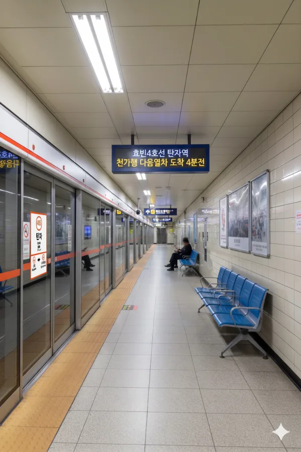

효빈 도시철도 4호선 425번. 효빈광역시 안천구 탄자동 532 소재다. 탄자동 일대의 핵심 교통 거점으로, 인근 성저택지지구 주민들의 발이 되어주는 역이다.
역사 전체가 지하 3층 규모로 건설되었다. 본래 4호선 1단계 개통 때 같이 문을 열 예정이었으나, 당시 주변이 논밭(...)이었던 성저택지지구 개발 속도 때문에 무정차 통과역으로 남겨졌던 흑역사가 있다. 그러다 주민들의 끈질긴 요구로 2007년에야 뒤늦게 개통되었다.
|
4
탄자역 출구 정보
|
||
|---|---|---|
| 번호 | 주요 시설 및 방향 | 비고 |
| 1 | 이자3동행정복지센터 | |
| 2 | 탄자초등학교, 탄자중학교 | 등하교 시간 헬게이트 |
| 3 | 성저동행정복지센터, 성저초, 성저중, 창건고, 신선초, 이자병원 | 학군 밀집 구역 |
택지지구 입주가 완료되면서 이용객이 폭발적으로 늘어났다. 현재는 일평균 2만 명을 가뿐히 넘기는 주요 역으로 성장했다.
| 탄자역 이용객 통계 | ||
|---|---|---|
| 연도 | 일평균 이용객 | 비고 |
| 2020년 | 20,643명 | |
| 2021년 | 20,852명 | |
| 2022년 | 24,532명 | |
| 2023년 | 25,823명 | |
| 2024년 | 27,182명 | 안천구 주요 수요처 |

| 앵내 ↑ | |||
| 하 | ㅣ | ㅣ | 상 |
| ↓ 이자공원 | |||
| 상 | 4 효빈 도시철도 4호선 | 해운산업지구 방면 |
| 하 | 4 효빈 도시철도 4호선 | 천가 방면 |
정류소명은 **탄자**이며, 택지지구 노선들이 대거 경유한다.
| 구분 | 정류소명 | 노선 번호 |
|---|---|---|
| 순방향 | 탄자 | 56, 151, 258, 561, 4004 |
| 역방향 | 탄자 (건너편) | 65, 511, 528, 651, 4004R |